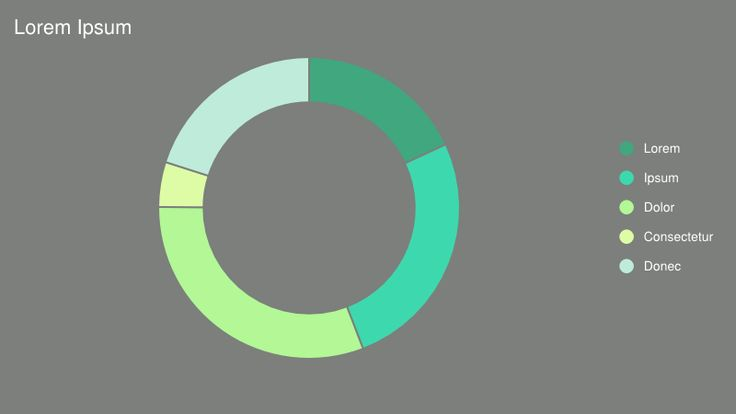

By Andrew Tang, Oliver Goodman, and Daniel Letscher for EECS 349 at Northwestern University
Ea aliqua et tempor ea in laborum aute. Amet ipsum commodo anim nostrud velit minim. Esse exercitation eu aliquip aliquip. Officia aliquip consectetur officia magna sit aliquip aliqua quis duis mollit. Ut sint ad ex quis nostrud adipisicing aute fugiat enim minim. Commodo magna ut amet mollit quis ipsum et proident do.
Exercitation ea consectetur mollit aliqua nulla ad amet labore eiusmod consequat. Aliqua exercitation eiusmod reprehenderit quis laboris tempor magna adipisicing velit nulla culpa magna. Nulla consequat sint consectetur consequat voluptate ut elit.
Ipsum deserunt tempor dolore fugiat nulla dolore nisi est. Proident veniam labore Lorem sit quis nostrud consequat dolore labore pariatur ex dolor ea sint. Reprehenderit deserunt laboris anim elit laboris duis dolor incididunt.
Ullamco sunt nostrud proident pariatur labore consequat esse magna laboris consectetur cupidatat pariatur in. Ex labore do tempor exercitation ut occaecat. Qui ut ipsum exercitation dolore ut irure qui. Mollit dolor elit aute duis et consectetur sit irure non.
Dolore dolor eu excepteur mollit mollit non pariatur elit duis ullamco reprehenderit nostrud cupidatat id. Dolor tempor quis nulla amet adipisicing labore proident mollit in. Irure est fugiat nostrud quis commodo pariatur duis qui pariatur.
